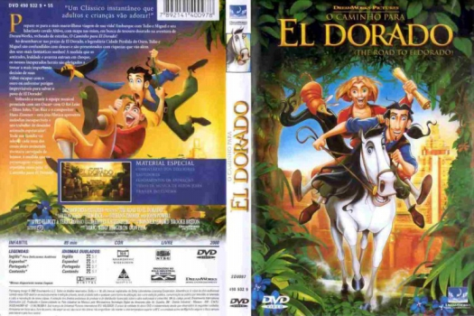

Outro Título:The Road to El Dorado
País:United States, 90 minutos
Idiomas falados:Cantonês, Espanhol, Inglês, Português
Gênero(s):Família, Aventura, Animação, Comédia, Fantasia
Diretor(s):Bibo Bergeron, Don Paul
Escritor(es):Terry Rossio, Ted Elliott
Codec:MPEG-2 (DVD)
Número: 5836


Certificado:L
Sinopse:
Tulio e Miguel são dois vigaristas que vivem de pequenos golpes. A sorte começa a mudar quando eles ganham um mapa que os levaria à cidade perdida de El Dorado, também conhecida como a cidade do ouro. Só que eles têm um pequeno problema: estão presos no navio do explorador espanhol Cortez. Após uma fuga ousada, em que contam com a ajuda de um esperto cavalo chamado Altivo, eles partem rumo à cidade perdida. Mas suas dificuldades estão apenas começando.
Elenco:


Tipo de mídia: DVD5,
Legendas: Cantonês, Espanhol, Inglês, Português, Sem Legendas
Alugado: Não
Tela: Anamorphic Widescreen